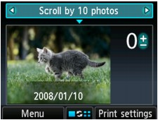

You can skip the photo on the LCD by the number of photos or the shooting date in Select photo print.
-
Press the center Function button when the photo selection screen is displayed.
The Change view/mode screen is displayed.
-
Use the

 button to select Skip mode, then press the OK button.
button to select Skip mode, then press the OK button.The following screen is displayed.
 -
Use the

 button to select the skip method.
button to select the skip method.The following methods are selectable.
- Scroll one by one:
-
The photo is scrolled one by one.
- Scroll by 10 photos:
-
The photo is scrolled by 10 photos.
- Scroll by 100 photos:
-
The photo is scrolled by 100 photos.
- Skip by date:
-
The photo is skipped by date last modified.
-
Use the
button to move the cursor to the photo selection. -
Use the
button to select the photo you want to print.To return to the skip method selection, use the
button.
 Note
Note-
It may take a while for skipping the photos depending on the number of photos saved on the memory card/USB flash drive.
-
When Skip by date is selected as a skip method, the date is displayed according to the settings of Date display format in Device user settings under Device settings.